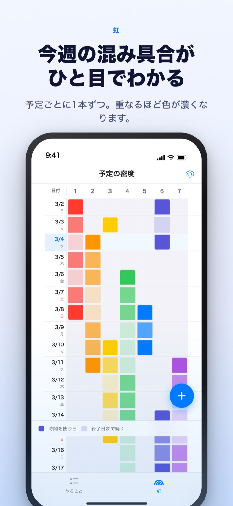
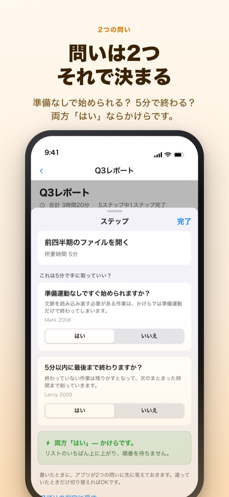
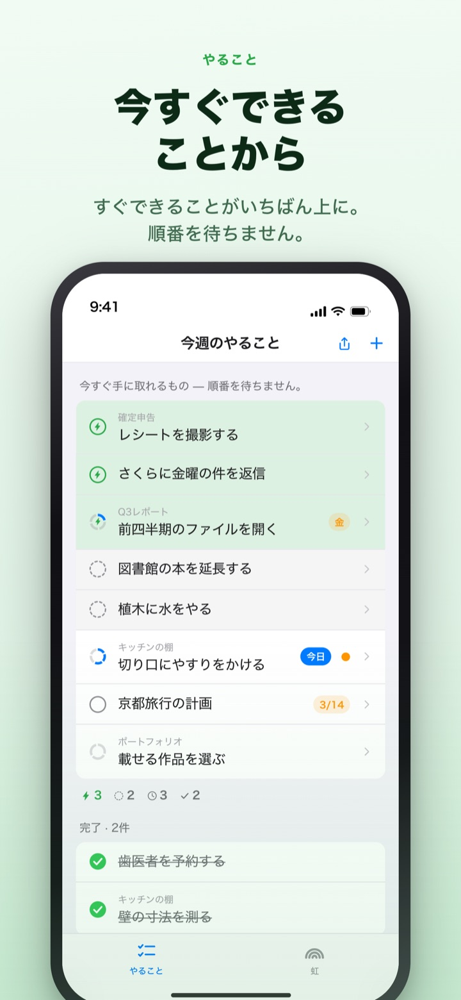
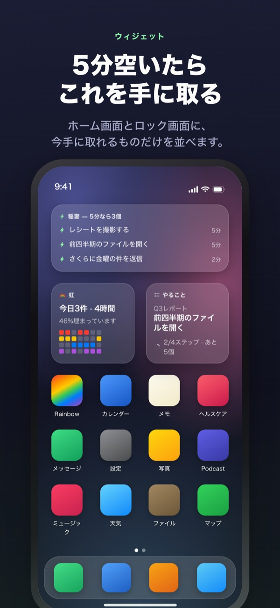

きつい週は先に見て、
5分のすき間も生かす
仕事が重なるほど虹の色が濃くなります。大きな仕事をステップに分けておけば、すき間ができたときに手に取れるステップが一番上で待っています。
虹、タスクの分解、タイマー、Macとの同期は無料です。

実際に振り分けてみる
「第3四半期レポート」を5つのステップに分けてあります。ステップを選んで所要時間を変えたり、2つの問いの答えを切り替えたりしてみてください。両方「はい」のステップだけが、5分で手に取れるかけらになります。
カレンダーは空いて見えるのに、息が詰まる週はありませんか？
カレンダーが教えてくれるのは予定が入っているかどうかだけ。締め切りが3つ同じ週に重なっていたと気づくのは、その週に入ってからです。合間にできた5分も、やることリストを眺めているうちに過ぎていきます。Rainbow of Desireは1週間をマス目で描いて重なった分だけ色を濃くし、すき間に手に取れるものを別に選んでおきます。
2つの問いで分かれます
大きな仕事をステップに分けると、ステップごとに2つ問います。準備運動なしですぐ始められるか。5分以内に最後まで終わるか。
両方「はい」のステップだけがかけらです。答えはアプリが所要時間と書いた言葉から先に入れておくので、違っていたときだけ切り替えます。

すき間ができたら一番上だけ見ればいい
やることを右にスワイプして稲妻を付けると、順番を飛ばして一番上に来ます。リスト全体を読まなくても、今手に取れるものがそこにあります。
ステップ同士が待ち合うかどうかは、まとまりごとに一度決めるだけ。順番どおりなら残っている最初のステップが、順不同なら今手に取れるかけらが先に来ます。

アプリを開かなくても見える
タイマーは予定が終わる時刻までカウントし、残り時間はダイナミックアイランドとロック画面にも出ます。
ホーム画面・ロック画面のウィジェットには、取りかかり中の仕事、5分でできること、今週の虹が表示されます。（ウィジェットはPro）

始めるのは3ステップ
- 1
予定を引く
始まる日の空きマスを長押しし、終わる日をもう一度タップすると、虹に1本の線が引かれます。
- 2
大きな仕事は分ける
やることをタップしてステップを書き、所要時間を選ぶだけ。2つの問いの答えはアプリが先に入れます。
- 3
すき間には一番上を見る
かけらと稲妻付きの項目が、順番を待たずに一番上に集まっています。
画面で出会う言葉
- 濃いマス・薄いマス
- 実際に手をつける日と、終わる日まで続く残りの期間
- 1行がマスで埋まる
- 同時に回す仕事が多く、1つずれるだけで1日全体がずれる日
- かけら
- 2つの問いがどちらも「はい」。5分空いたら手に取るステップ
- 短いまとまり
- 準備運動はいらないけれど、かけらでは終わらないステップ。腰を据えてひと続きで終える
- まとまった時間
- 準備運動が必要か45分以上かかるステップ。確保した時間に置く
- 稲妻
- 自分で付ける「今すぐ」の印。順番を飛ばして一番上へ
- 順番どおり・順不同
- ステップ同士が待ち合うかどうか。まとまりごとに一度決める
- 回収帳
- 1週間の決算。残った分、取り戻した時間、ひと息ついた時間を足し合わせずに別々に記録
時間は下から上へ積み上がります。大きな仕事の時間はステップの時間の合計です。
今日を過ごすのに必要なものは無料です
無料
- 虹（予定の密度のマス目）
- タスクのステップ分解と2つの問い
- 稲妻、ステップの順番
- タイマー（ダイナミックアイランド・ロック画面）
- MacアプリRainbow CraftとのiCloud同期
- 直近2週間の回収帳
Rainbow Plus・Rainbow Pro
- Plus：予定の統計、2週間より前の回収帳
- Pro：Plusのすべてとホーム画面・ロック画面のウィジェット
- Pro：カレンダーから読み込み、常に映す
- Pro：予定の共有（閲覧のみ）
- Pro：MacのRainbow Craft Proも一緒に使える
それぞれ年間サブスクリプション、または1回払いの買い切り
お金をいただくのは、過ぎた週を振り返る機能とアプリの外へ出す機能だけです。以前Proを購入した方、月額プランを続けている方は今もProのままです。
よくある質問
アカウントやiCloudへのサインインは必要ですか？
ひとりで使うなら不要です。登録もなく、すべて端末内に保存されます。ほかの端末やMacアプリと同期したり共有機能を使ったりするには、iCloudへのサインインが必要です。
2つの問いの答えが違っています。
ステップをタップして「はい」と「いいえ」を切り替えてください。自分で決めた答えはアプリの判定より優先されます。任せ直したいときは「アプリの判定に戻す」をタップします。所要時間を入れていないステップは5分で終わるかわからないため、かけらには数えません。
ほかの人と一緒に見られますか？
招待リンクで自分の予定を閲覧のみで共有でき（Pro）、招待した人と1つのやることリストを一緒に読み書きすることもできます。リンクを受け取った人は誰でも参加できるので、一緒に使う人にだけ送ってください。Appleのファミリー共有とは関係ありません。
カレンダーアプリの予定も表示されますか？
選んだカレンダーの予定を虹と1日の画面に一緒に映します（Pro）。読み込むだけで、カレンダーには何も書き込みません。
ウィジェットからチェックできますか？
ウィジェットは表示のみです。タップするとやることの画面がすぐ開くので、チェックはアプリで行ってください。
Macアプリは別に買う必要がありますか？
Rainbow CraftはMac App Storeにある別のmacOSアプリです。同じiCloudアカウントなら、やることと週の計画が自動で行き来し、同期にお金はかかりません。
以前書いたやることはそのままですか？
はい。やること、ステップ、入れておいた時間はそのまま残ります。以前選んだ着手条件のラベルは、2つの問いでアプリが判定し直します。
書いた内容はどこに保存されますか？
サーバーはありません。自分の端末と自分のiCloudにだけあり、開発者は見られません。広告識別子や位置情報は使わず、個人を特定できない匿名の利用統計だけを送ります。統計は設定でオフにできます。
サブスクリプションはどう解約しますか？
設定アプリの「Appleアカウント」>「サブスクリプション」から解約できます。期間終了の24時間前までに解約しないと、同じ料金で自動更新されます。買い切りは1回の支払いだけです。
使っていて困ったことやおかしな点があれば、leeo@kakao.com までお知らせください。アプリの設定にも問い合わせの項目があります。